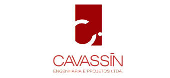
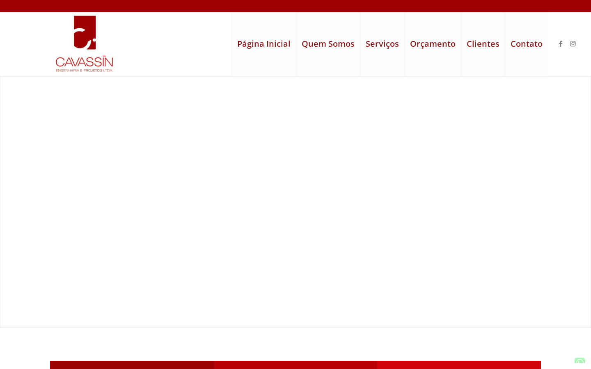
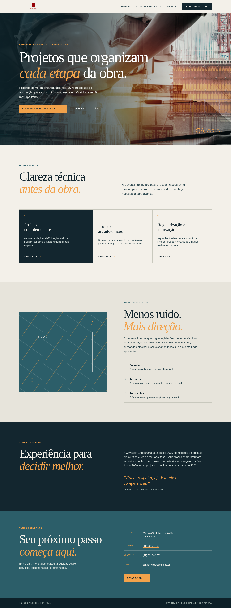
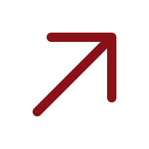

Posicionamento
Trocar a chamada ampla por uma frase que reúna projetos complementares, arquitetura, regularização e aprovação — serviços já publicados pela empresa.

Conceito independente · 17.07.2026Leitura de oportunidade
Uma proposta de reorganização da mensagem digital para tornar mais claro o que a Cavassin faz, como trabalha e qual é o próximo passo para quem precisa de engenharia em Curitiba.
Antes e depois


Prioridades
Trocar a chamada ampla por uma frase que reúna projetos complementares, arquitetura, regularização e aprovação — serviços já publicados pela empresa.
A home atual não apresenta projetos, aprovações, responsáveis técnicos, CREA ou depoimentos verificáveis. O novo percurso não inventa prova: organiza capacidade, método e contatos.
Substituir a área social vazia e corrigir o texto comercial para um contato direto, com endereço, telefone, WhatsApp e e-mail publicados oficialmente.
Entregáveis deste pacote
Dependências para próxima etapa
Para uma versão definitiva ainda seriam necessários, se a empresa desejar publicar: aprovação da direção visual, confirmação dos dados de contato, seleção de projetos que possam ser divulgados, nomes e registros profissionais autorizados, e eventuais imagens próprias.
Sem esses materiais, o conceito permanece deliberadamente limitado ao que foi verificado.
Próximo passo

Este é um conceito independente, não afiliado, endossado ou publicado pela Cavassin Engenharia. As informações factuais foram limitadas às fontes listadas no manifesto.